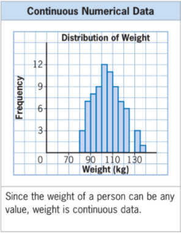
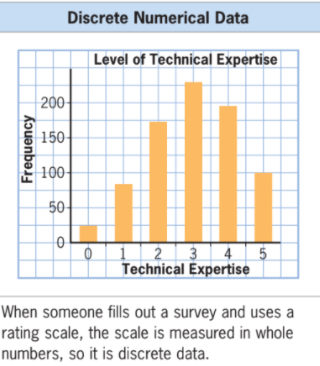
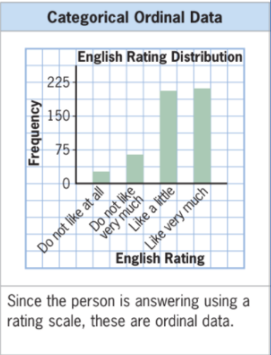
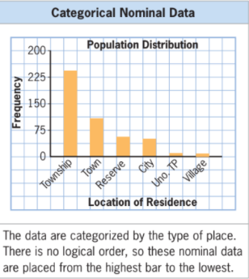

Data Concepts and Graphical Summaries
Definition of Terms
Data are the numerical information recorded to be utilized in analyzing and creating statistics.
Types of Data
- Numerical (quantitative) data
data in the form of any number
examples: age, IQ scores, height, weight - Categorical (qualitative) data
data that can be sorted into distinct groups or categories
examples: gender, citizenship, religion
Types of Numerical (Quantitative) Data
Select each item to learn more.
Continuous numerical data
can have any value in a range (including decimal numbers).
example: the weight of a person or the amount of time an experiment takes could have any value in a range.

Discrete numerical data
are data that only have specific values (usually whole numbers).
example:

Types of Categorical (Qualitative) Data
Select each item to learn more.
Categorical Ordinal data
qualitative data that can be ranked
• examples: poor, fair, good, very good

Categorical Nominal data
qualitative data that cannot be ranked
• examples: blue eyes, green eyes, brown eyes

Example
For each graph, identify the type of data, give reason(s) for your choice, and write one statement about what the data shows.
(fold the solution at first, click a button to show the solution)
A. A survey asks people to rate how concerned they are with Internet privacy on a scale where 1 is not concerned and 5 is very concerned.

Solution:
categorical, ordinal data since they are non-numerical and ranked
most people are concerned with Internet privacy
B. A survey asks 1000 people how many hours a week they watch TV.

Solution:
numerical, continuous data since the numbers can be any value
more than one-third of the respondents watch 0–10 hours of TV
C. A town planner records how many floors each apartment building has.

Solution:
numerical, discrete data since each value can be only a distinct whole number
most apartment buildings in the town have 10 floors
D. The songs in a digital music library are sorted by genre.

Solution:
categorical, nominal data since they are non-numerical and not ranked
the owner of the library likes alternative music more than any other